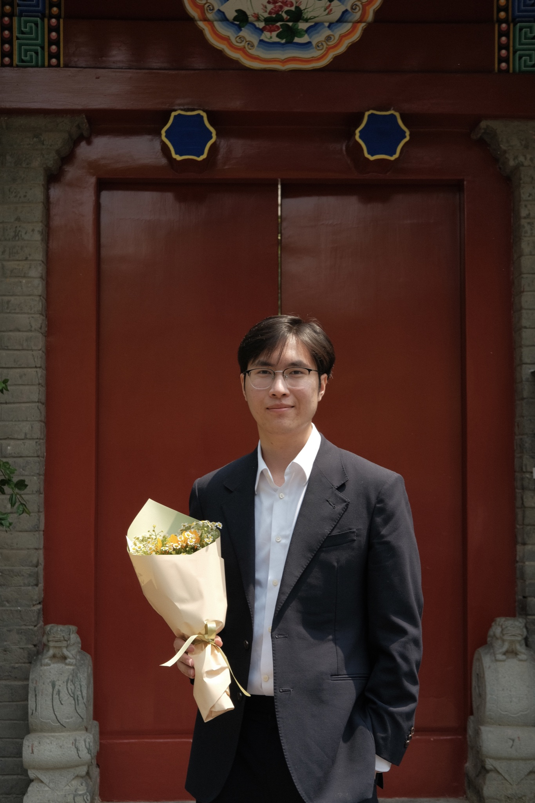

I'm a researcher at VinRobotics 🇻🇳, working on Embodied AI with Prof. An Thai Le. I also closely collaborate with the IAS Lab at TU Darmstadt 🇩🇪 led by Prof. Jan Peters and the xML Lab at National University of Singapore 🇸🇬 led by Prof. Xinchao Wang.
Prior to this, I did my Master's at Peking University 🇨🇳, where I was advised by Prof. He Wang. After graduation, I interned in the Bay Area 🇺🇸 with Prof. Yue Wang (USC). I also had a wonderful time interning at WorldQuant 🇻🇳 doing quant research with Dr. Luan Tran (USC). I did my undergrad at Bauman Moscow State Technical University 🇷🇺.
I'm interested in general robot loco-manipulation and foundation models for robots with underexplored modalities like forceModeled by the mass-spring-damper system used here and here..

* Equal contribution † Equal advising